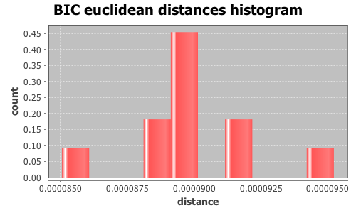

Application Meta
jModeltest 2.1
(c) 2011-onwards D. Darriba, G.L. Taboada, R. Doallo and D. Posada,(1) Department of Biochemistry, Genetics and Immunology
University of Vigo, 36310 Vigo, Spain.
(2) Department of Electronics and Systems
University of A Coruna, 15071 A Coruna, Spain.
e-mail: ddarriba@udc.es, dposada@uvigo.es
Wed Nov 16 20:39:44 CET 2016
Mac OS X 10.12, arch: x86_64, bits: 64, numcores: 4
| Citation: | Darriba D, Taboada GL, Doallo R and Posada D. 2012. "jModelTest 2: more models, new heuristics and parallel computing". Nature Methods 9, 772. |
 Back to top
Back to top Settings
Arguments = -d results/topaza_allele_alignments_selections/random_150/uce-4308_phased.nexus -i -g 4 -s 3 -BICInput Alignment: "results/topaza_allele_alignments_selections/random_150/uce-4308_phased.nexus"
NumTaxa = 20
Length = 967
Phyml version = 3.0
Phyml binary = PhyML_3.0_macOS_i386
Candidate models = 12
number of substitution schemes = 3
including only models with equal base frequencies
including models with/without a proportion of invariable sites (+I)
including models with/without rate variation among sites (+G) (nCat = 4)
Optimized free parameters (K) = Substitution parameters + 37 branch lengths + topology
Base tree for likelihood calculations = Maximum Likelihood
Tree topology search operation = Best of {NNI, SPR}
Model Optimization Results
| ID | Name | Partition | -lnL | p | fA | fC | fG | fT | ti/tv | R(a) | R(b) | R(c) | R(d) | R(e) | R(f) | p-inv | shape |
|---|---|---|---|---|---|---|---|---|---|---|---|---|---|---|---|---|---|
| 1 | JC | 000000 | 1412.3097 | 38 | - | - | - | - | - | - | - | - | - | - | - | - | - |
| 2 | JC+I | 000000 | 1411.7902 | 39 | - | - | - | - | - | - | - | - | - | - | - | 0.4690 | - |
| 3 | JC+G | 000000 | 1410.9854 | 39 | - | - | - | - | - | - | - | - | - | - | - | - | 0.0290 |
| 4 | JC+I+G | 000000 | 1410.4061 | 40 | - | - | - | - | - | - | - | - | - | - | - | 0.5130 | 0.0110 |
| 5 | K80 | 010010 | 1410.8913 | 39 | - | - | - | - | 1.6721 | - | - | - | - | - | - | - | - |
| 6 | K80+I | 010010 | 1408.1436 | 40 | - | - | - | - | 1.7006 | - | - | - | - | - | - | 0.9710 | - |
| 7 | K80+G | 010010 | 1409.5684 | 40 | - | - | - | - | 1.6694 | - | - | - | - | - | - | - | 0.0290 |
| 8 | K80+I+G | 010010 | 1408.9890 | 41 | - | - | - | - | 1.6721 | - | - | - | - | - | - | 0.5130 | 0.0110 |
| 9 | SYM | 012345 | 1407.5890 | 43 | - | - | - | - | - | 1.0000 | 916.1150 | 733.6893 | 2131.0294 | 3315.2315 | 1.0000 | - | - |
| 10 | SYM+I | 012345 | 1405.0357 | 44 | - | - | - | - | - | 1.0000 | 2688.1265 | 2290.1177 | 6112.7424 | 10373.1764 | 1.0000 | 0.9650 | - |
| 11 | SYM+G | 012345 | 1406.2809 | 44 | - | - | - | - | - | 1.0000 | 1065.8597 | 860.2781 | 2483.5689 | 3894.2166 | 1.0000 | - | 0.0290 |
| 12 | SYM+I+G | 012345 | 1405.7415 | 45 | - | - | - | - | - | 1.0000 | 937.3715 | 761.0062 | 2140.7011 | 3459.1334 | 1.0000 | 0.4930 | 0.0120 |
There are 7 different topologies. The following table shows the models supporting each topology and the rank according to each Information Criterion, as well as Robinson-Foulds and Euclidean distances with the tree of the best-fit model.
| ID | Models | Topology | AIC | BIC | AICc | DT | |
|---|---|---|---|---|---|---|---|
| 0 |
JC
|
RANK | - | 0 | - | - | |
| Weight | - | 0.7151 | - | - | |||
| RF | - | 0 | - | - | |||
| AVG Distance | - | 0.0000e+00 | - | - | |||
| Distance VAR | - | 0.0000e+00 | - | - | |||
| 1 |
K80+G SYM+G
|
RANK | - | 1 | - | - | |
| Weight | - | 0.0115 | - | - | |||
| RF | - | 8 | - | - | |||
| AVG Distance | - | 3.0456e-03 | - | - | |||
| Distance VAR | - | 2.3475e-10 | - | - | |||
| 2 |
JC+G K80 SYM
|
RANK | - | 2 | - | - | |
| Weight | - | 0.1814 | - | - | |||
| RF | - | 10 | - | - | |||
| AVG Distance | - | 3.1068e-03 | - | - | |||
| Distance VAR | - | 8.6438e-09 | - | - | |||
| 3 |
JC+I+G K80+I+G
|
RANK | - | 3 | - | - | |
| Weight | - | 0.0056 | - | - | |||
| RF | - | 28 | - | - | |||
| AVG Distance | - | 3.0339e-03 | - | - | |||
| Distance VAR | - | 1.3573e-13 | - | - | |||
| 4 |
K80+I SYM+I
|
RANK | - | 4 | - | - | |
| Weight | - | 0.0477 | - | - | |||
| RF | - | 28 | - | - | |||
| AVG Distance | - | 3.0940e-03 | - | - | |||
| Distance VAR | - | 8.5726e-10 | - | - | |||
| 5 |
SYM+I+G
|
RANK | - | 5 | - | - | |
| Weight | - | 0.0000 | - | - | |||
| RF | - | 28 | - | - | |||
| AVG Distance | - | 3.1221e-03 | - | - | |||
| Distance VAR | - | 0.0000e+00 | - | - | |||
| 6 |
JC+I
|
RANK | - | 6 | - | - | |
| Weight | - | 0.0387 | - | - | |||
| RF | - | 30 | - | - | |||
| AVG Distance | - | 2.8922e-03 | - | - | |||
| Distance VAR | - | 0.0000e+00 | - | - |
BIC Selection Results
Model selected
| Model | JC | ||
|---|---|---|---|
| partition | 000000 | ||
| -lnL | 1412.3097 | ||
| K | 38 | ||
| freqA | - | R(a) | - |
| freqC | - | R(b) | - |
| freqG | - | R(c) | - |
| freqT | - | R(d) | - |
| ti/tv | - | R(e) | - |
| R(f) | - | ||
| p-inv | - | gamma | - |
Best model tree
(T_pella8_0:0.00000001,((T_pella6_1:0.00000058,(T_pella9_1:0.00103745,(T_pyra3_1:0.00104585,(T_pyra1_1:0.00000001,(T_pella7_0:0.00000001,(T_pyra3_0:0.00000001,(T_pyra1_0:0.00000001,(T_pyra4_1:0.00000001,(T_pella7_1:0.00000001,(T_pyra4_0:0.00000001,(T_pella5_0:0.00000001,(T_pella8_1:0.00103593,(T_pella9_0:0.00000001,(T_pyra2_0:0.00000001,T_pyra2_1:0.00000011):0.00000001):0.00000001):0.00000007):0.00000007):0.00000054):0.00000009):0.00004204):0.00005160):0.00008154):0.00085954):0.00000013):0.00000007):0.00103485):0.00103493,(Florisuga_1:0.00000016,T_pella5_1:0.00000025):0.00000025):0.00103526,(Florisuga_0:0.00000013,T_pella6_0:0.00050732):0.00054478);
Display best model tree in PhyloWidget
| Model | -lnL | K | BIC | delta | weight | cumWeight |
|---|---|---|---|---|---|---|
| JC | 1412.3097 | 38 | 3085.8389 | 0.0000 | 0.7151 | 0.7151 |
| K80 | 1410.8913 | 39 | 3089.8763 | 4.0374 | 0.0950 | 0.8101 |
| JC+G | 1410.9854 | 39 | 3090.0646 | 4.2258 | 0.0865 | 0.8966 |
| K80+I | 1408.1436 | 40 | 3091.2552 | 5.4163 | 0.0477 | 0.9442 |
| JC+I | 1411.7902 | 39 | 3091.6741 | 5.8353 | 0.0387 | 0.9829 |
| K80+G | 1409.5684 | 40 | 3094.1047 | 8.2658 | 0.0115 | 0.9944 |
| JC+I+G | 1410.4061 | 40 | 3095.7802 | 9.9413 | 0.0050 | 0.9993 |
| K80+I+G | 1408.9890 | 41 | 3099.8201 | 13.9812 | 0.0007 | 1.0000 |
| SYM | 1407.5890 | 43 | 3110.7686 | 24.9298 | 0.0000 | 1.0000 |
| SYM+I | 1405.0357 | 44 | 3112.5361 | 26.6972 | 0.0000 | 1.0000 |
| SYM+G | 1406.2809 | 44 | 3115.0265 | 29.1876 | 0.0000 | 1.0000 |
| SYM+I+G | 1405.7415 | 45 | 3120.8218 | 34.9830 | 0.0000 | 1.0000 |
| -lnL: | negative log likelihod |
| K: | number of estimated parameters |
| BIC: | Bayesian Information Criterion |
| delta: | BIC difference |
| weight: | BIC weight |
| cumWeight: | cumulative BIC weight |
Confidence interval
There are 12 models in the 100.00% confidence interval:
JC K80 JC+G K80+I JC+I K80+G JC+I+G K80+I+G SYM SYM+I SYM+G SYM+I+G

Euclidean distances histogram from each model optimized tree to JC tree.
Euclidean distances histogram from each model optimized tree to JC tree.